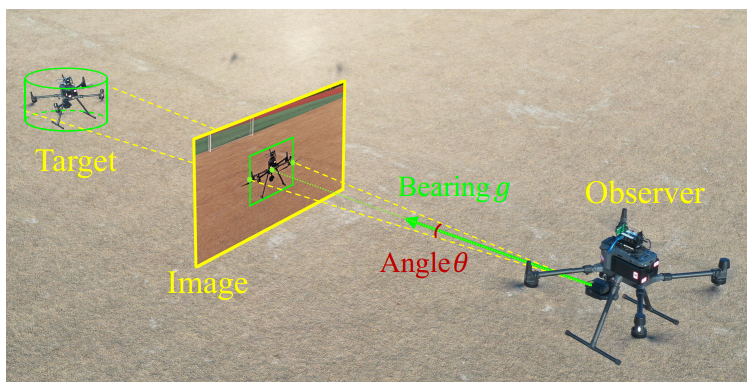
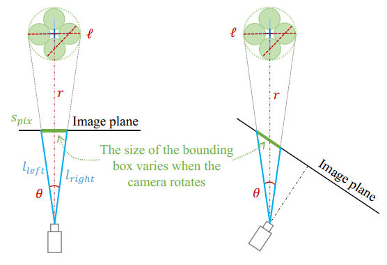
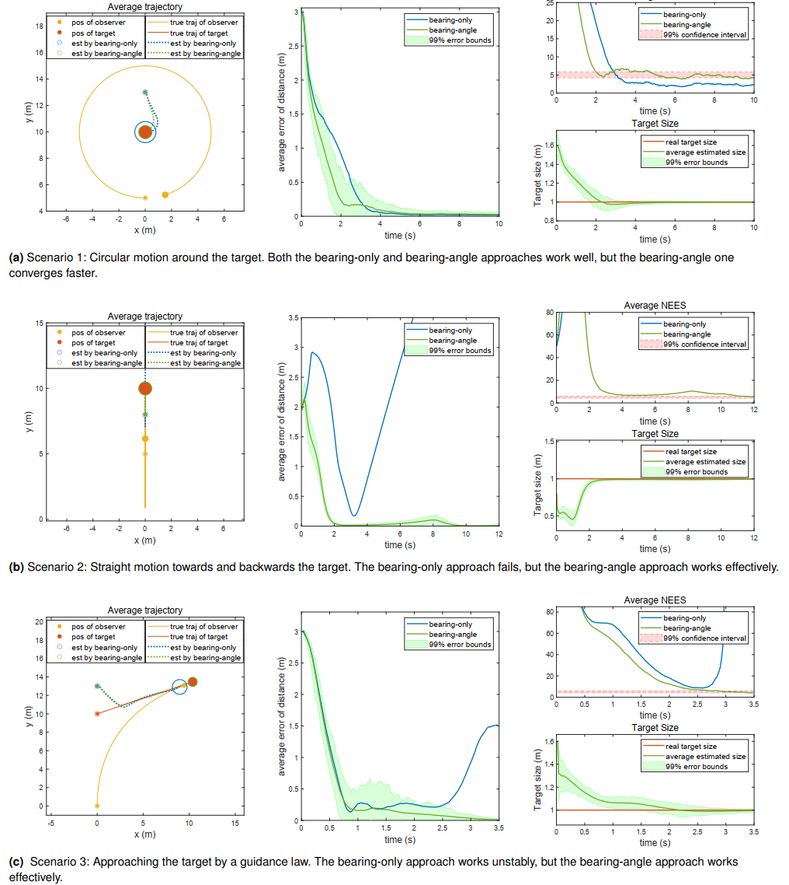
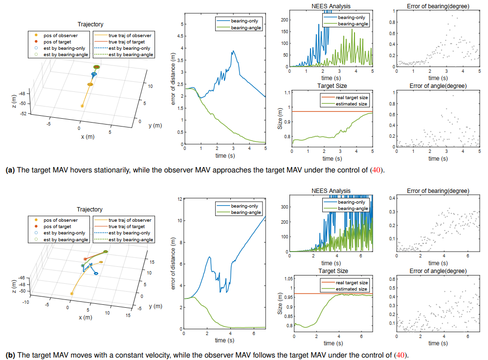
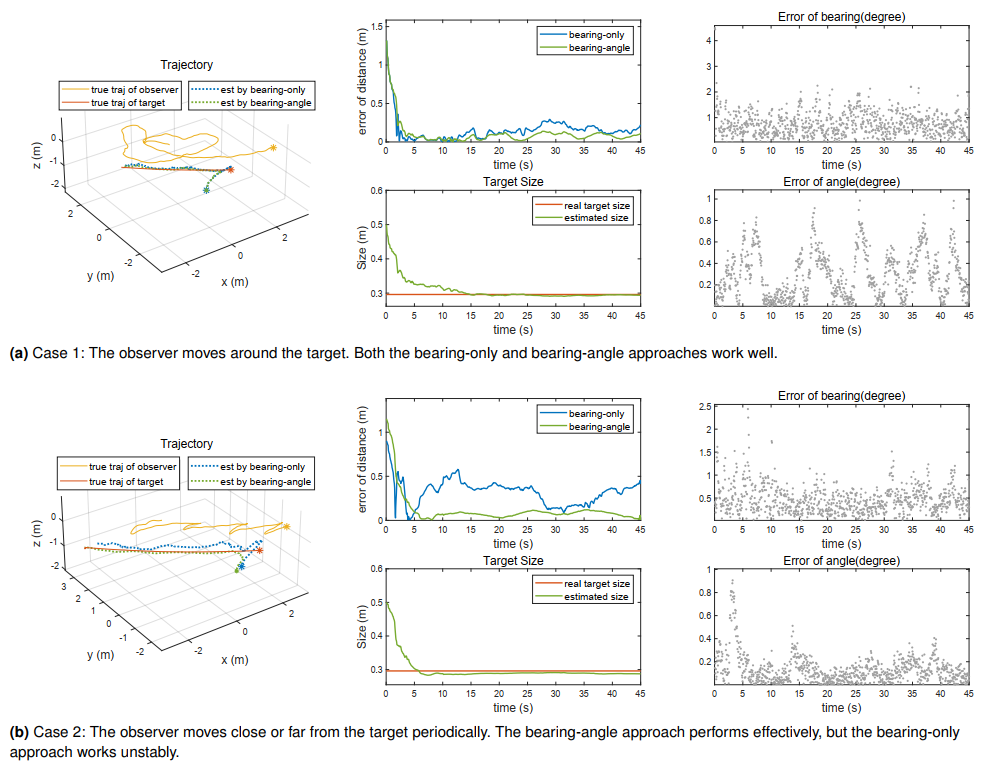
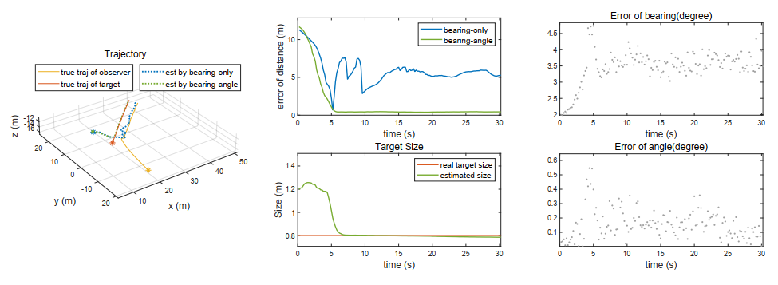

| Title | A Bearing-Angle Approach for Unknown Target Motion Analysis Based on Visual Measurements（基于视觉测量的方位-角度未知目标运动估计方法） |
| Authors | Zian Ning（宁子安，浙江大学）、Yin Zhang（张尹，西湖大学）、Jianan Li（李嘉楠，西湖大学）、Zhang Chen（陈章，清华大学）、Shiyu Zhao（赵世钰，西湖大学，corresponding author） |
| Affiliation | 浙江大学计算机科学与技术学院 / 西湖大学工学院 & 未来产业研究中心 / 清华大学自动化系 |
| Venue | arXiv:2401.17117v1 [cs.RO]，2024年1月30日 | 投稿至某 SAGE 期刊（待发表），共 20 页 |
| DOI / Links | arxiv.org/abs/2401.17117 | 通信作者邮箱：zhaoshiyu@westlake.edu.cn |
| TL;DR | 提出 bearing-angle（方位-角度）目标运动估计新范式——将目标检测框的尺寸信息转换为目标在相机视野中的张角，与传统的方位向量联合估计目标的运动状态（位置、速度、物理尺寸）。核心优势：无需观测器做额外的横向机动即可满足可观测性条件，打破了传统 bearing-only 方法"必须侧向运动"的根本限制。收益零成本——因为检测框是目标检测算法的标准输出，不需要额外传感器或特殊算法。 |
| Inspiration Source | → What Insight It Inspired | Type |
|---|---|---|
| 目标检测算法普遍输出 bounding box（YOLO、Faster R-CNN 等），其尺寸信息在传统 bearing-only 框架中被完全丢弃 | → 将 bounding box 的尺寸转换为张角（subtended angle）——利用针孔相机模型和余弦定理，宽度/高度 → 张角。张角 = 2 arctan(l/2r)，其中 l 为物理尺寸、r 为距离——包含了目标距离的隐式信息 | 架构 |
| 直接使用 bounding box 尺寸的问题：尺寸随相机旋转而变化（同一个目标，不同视角下的 bounding box 宽度不同） | → 用张角替代原始尺寸——因为张角只取决于目标物理尺寸和距离，与相机朝向无关（Fig. 2）。这一洞察避开了 Griffin & Corso (2021) 中"相机只能平移不能旋转"的强假设 | 方法 |
| bearing-only 可观测性条件要求观测器做横向机动（Fogel & Gavish, 1988），与追捕任务的期望运动矛盾 | → 证明 bearing-angle 的充要可观测性条件仅为"观测器的运动阶数高于目标"——不再要求该高阶运动正交于方位向量。沿视线方向的加减速即可使系统可观，无需侧向机动 | 数学 |
| 伪线性卡尔曼滤波器（Pseudo-Linear KF）在 bearing-only 中已有应用（Aidala & Nardone, 1982），但仅处理方位测量 | → 将方位和角度两个非线性测量方程同时伪线性化——方位通过正交投影矩阵 Pg 线性化，角度通过乘以 r 变换后线性化。状态向量从 6 维扩展为 7 维（增加目标物理尺寸 l），在统一的 KF 框架中处理 | 策略 |
flowchart TB
subgraph PERCEPTION["视觉感知层"]
direction LR
CAM["单目相机 · 机载 · 30fps"]
DET["tiny-YOLOv4 目标检测 · mAP>99.5%"]
BB["输出: 2D边界框 · 中心点+宽高"]
end
subgraph MEASUREMENT["测量生成层"]
direction LR
BEARING["方位向量 g: 由中心像素 + 相机内参 · Pinhole模型"]
ANGLE["张角 theta: 由边界框尺寸 + 余弦定理 · 对旋转不变"]
INVARIANT["相机旋转不变性: theta仅由l和r决定"]
end
subgraph ESTIMATOR["Bearing-Angle 估计器层"]
direction LR
STATE["状态向量: x = [pT vT l] · 7维增广"]
PREDICT["预测: 双积分运动模型 · 恒速加噪"]
PLINEAR["伪线性化: Pg正交投影 + r乘变换"]
KF["Kalman更新: 6维测量→7维状态 · 伪逆保证数值稳定"]
end
subgraph OUTPUT["估计输出层"]
direction LR
POS["目标位置 pT · 三维"]
VEL["目标速度 vT · 三维"]
SIZE["目标物理尺寸 l · 标量 · 缓慢时变"]
end
subgraph CONTROL["运动控制层（可选）"]
direction LR
PNG["比例导引律 / 距离跟踪控制器"]
GIMBAL["云台控制: 目标保持在视野中心"]
end
CAM --> DET --> BB
BB --> BEARING
BB --> ANGLE
INVARIANT --> ANGLE
BEARING --> PLINEAR
ANGLE --> PLINEAR
STATE --> PREDICT --> KF
PLINEAR --> KF
KF --> POS
KF --> VEL
KF --> SIZE
POS --> PNG
VEL --> PNG
POS --> GIMBAL
SIZE -.->|"反馈: l用于下次线性化"| PLINEAR
POS -.->|"反馈: r估计用于协方差"| KF
classDef percep fill:#fef7ed,stroke:#f59e0b,stroke-width:2px,color:#92400e
classDef meas fill:#e8f0fe,stroke:#3b82f6,stroke-width:2px,color:#1d4ed8
classDef estim fill:#f0ebfd,stroke:#8b5cf6,stroke-width:2px,color:#6d28d9
classDef out fill:#e6f7ee,stroke:#10b981,stroke-width:2px,color:#047857
classDef ctrl fill:#ffe4e6,stroke:#f43f5e,stroke-width:2px,color:#be123c
class CAM,DET,BB percep
class BEARING,ANGLE,INVARIANT meas
class STATE,PREDICT,PLINEAR,KF estim
class POS,VEL,SIZE out
class PNG,GIMBAL ctrl
flowchart TB
subgraph SUB1["图像采集 → 目标检测"]
direction LR
A1["相机采集 640x480@30fps"] --> A2["tiny-YOLOv4 推理"] --> A3["2D边界框: 中心(x,y) + 宽w + 高h"]
end
subgraph SUB2["像素 → 几何测量"]
direction LR
B1["中心像素 → g = Rcw·Pcam⁻¹·qpix / |...|"] --> B2["方位向量 g: 含噪声 nu ~ N(0,sigma²g)"]
C1["边界框宽/高 + 余弦定理 → theta"] --> C2["张角 theta: 含噪声 w ~ N(0,sigma²w)"]
end
subgraph SUB3["伪线性化: 非线性→线性测量方程"]
direction LR
D1["方位: Pg·po = Pg·pT + r·Pg·nu"] --> D2["Pg = I - gg^T · 正交投影矩阵"]
E1["角度: theta·po = theta·pT - g + r(theta·nu - w·g)"] --> E2["等式两边乘以r解除分母非线性"]
end
subgraph SUB4["Kalman滤波: 预测+更新"]
direction LR
F1["预测: x⁻=F·x, P⁻=F·P·F^T+Q"] --> F2["更新: K=P⁻H^T(HP⁻H^T+R)⁺"]
F2 --> F3["输出: pT, vT, l"]
end
subgraph SUB5["噪声特性与协方差"]
direction LR
G1["测量噪声: sigma_g=0.01, sigma_w=0.01"] --> G2["过程噪声: Q=diag(0,0,0,sigma²v,...)"]
G2 --> G3["协方差: nu = E·diag(sigma²g,sigma²w)·E^T"]
end
A3 --> B1
A3 --> C1
B2 --> D1
C2 --> E1
D2 --> F1
E2 --> F1
F3 --> G1
G3 --> F2
classDef s1 fill:#fef7ed,stroke:#f59e0b,stroke-width:2px,color:#92400e
classDef s2 fill:#e8f0fe,stroke:#3b82f6,stroke-width:2px,color:#1d4ed8
classDef s3 fill:#f0ebfd,stroke:#8b5cf6,stroke-width:2px,color:#6d28d9
classDef s4 fill:#e6f7ee,stroke:#10b981,stroke-width:2px,color:#047857
classDef s5 fill:#fce7f3,stroke:#ec4899,stroke-width:2px,color:#9d174d
class A1,A2,A3 s1
class B1,B2,C1,C2 s2
class D1,D2,E1,E2 s3
class F1,F2,F3 s4
class G1,G2,G3 s5
flowchart TD
subgraph PHASE1["阶段1: 离线数据集自动采集"]
direction LR
P1["AirSim仿真环境 · Unreal Engine 渲染"] --> P2["自动采集: 随机位置+姿态+背景"] --> P3["17000张标注图像 · mAP=99.5%"]
end
subgraph PHASE2["阶段2: 视觉检测器训练"]
direction LR
Q1["tiny-YOLOv4 网络训练 · NVIDIA GV100"] --> Q2["目标检测输出: 高精度2D边界框"] --> Q3["部署: 机载计算机 / 地面站"]
end
subgraph PHASE3["阶段3: 在线状态估计"]
direction LR
R1["相机采集 → YOLO推理 → 边界框"] --> R2["生成方位g和角度theta测量"] --> R3["伪线性化 → Kalman滤波 → 输出pT,vT,l"]
end
subgraph PHASE4["阶段4: 实验验证"]
direction LR
S1["数值仿真: 3场景×100 Monte Carlo"] --> S2["AirSim仿真: 逼近/跟随/绕圈"] --> S3["真实实验: 手持+地面机器人 → MAV追MAV"]
end
PHASE1 -->|"标注数据集"| PHASE2
PHASE2 -->|"部署检测器"| PHASE3
PHASE3 -->|"估计结果"| PHASE4
PHASE4 -.->|"反馈: 非高斯噪声→调参"| PHASE3
classDef p1 fill:#fef7ed,stroke:#f59e0b,stroke-width:2px,color:#92400e
classDef p2 fill:#e8f0fe,stroke:#3b82f6,stroke-width:2px,color:#1d4ed8
classDef p3 fill:#f0ebfd,stroke:#8b5cf6,stroke-width:2px,color:#6d28d9
classDef p4 fill:#e6f7ee,stroke:#10b981,stroke-width:2px,color:#047857
class P1,P2,P3 p1
class Q1,Q2,Q3 p2
class R1,R2,R3 p3
class S1,S2,S3 p4
| 类别 | 内容 | 维度/说明 |
|---|---|---|
| 输入 | 单目相机图像序列 + 观测器自身位姿（位置 + 相机朝向） | 图像 640x480@30fps（室内）/ 1920x1080@15fps（室外）；位姿由 Vicon（室内 1mm 精度）/ RTK GPS（室外 1cm 精度）提供 |
| 输出 | 目标三维位置 pT ∈ R3，目标三维速度 vT ∈ R3，目标物理尺寸 l ∈ R+ | 7 维增广状态向量，50 Hz 更新率 |
| 目标 | 在不依赖观测器横向机动的情况下，仅用标准目标检测的 bounding box 信息，实现稳定、准确的目标运动估计——在 bearing-only 失效的场景下仍有效 | 收敛时间 <10 s，距离误差在 AirSim 实验中 <2 m（10 m 距离下），MAV 追踪实验 <5 m（20-50 m 距离下） |
这是一个视觉状态估计 + 可观测性理论问题。与纯算法或硬件创新不同，本文的贡献在于重新审视了一个被忽略的信息源（bounding box 尺寸），并用严格的数学工具（Kalman 可观测性矩阵、伪线性滤波、多项式运动模型）证明了这个信息源的价值。应用场景：空中目标追捕（aerial target pursuit）——观测 MAV 用机载单目相机检测并追踪另一架 MAV。平台：单目相机 + 机载计算机（Manifold 2G）/ 地面站。
⚠ 表头用英文，正文用中文
| Prior Method | Core Idea | Why It Fails |
|---|---|---|
| Bearing-Only Target Motion Estimation（经典方位测量方法，Fogel & Gavish 1988; He et al. 2019; Li et al. 2023） | 仅使用目标检测框中心点计算方位向量 g，通过观测器的横向机动从多视角三角化目标位置。可使用 EKF、伪线性 KF 或粒子滤波实现 | 可观测性条件严格：要求观测器做相对于方位向量的正交方向机动。在追捕/跟随任务中，期望运动恰是沿视线方向——与可观测性条件直接冲突。无横向机动 → 系统不可观 → 估计发散（Fig. 4b, 4c, 8, 11b, 13 均有验证）。即使使用螺旋引导律（Li et al. 2023）优化可观测性，也需要观测器做额外的横向周期性运动 |
| Depth from Camera Motion and Object Detection（Griffin & Corso 2021, CVPR） | 利用 bounding box 尺寸+多视角观测来估计静止目标的深度。当前最接近本文的工作 | 两个强假设：（1）目标必须是静止的——无法处理运动目标（本文的核心场景就是运动目标）；（2）相机只能平移不能旋转——在真实飞行中相机不可避免地有旋转（姿态变化）。这两个假设在实际 MAV 任务中几乎不可能满足 |
| Marker-Less MAV Detection and Localization（Vrba & Saska 2020, RA-L） | 利用 CNN 检测 MAV + bounding box 尺寸来估计目标位置。也使用了 bounding box 的尺寸信息 | 需要目标尺寸的先验知识——在实际对抗场景中（如追踪一架未知型号的无人机），目标的物理尺寸不可知。本文不需要任何先验，l 是在线估计的 |
| CubeSLAM / Dynamic SLAM（Yang & Scherer 2019; Qiu et al. 2019） | 在 SLAM 中同时估计相机姿态和动态目标的三维包围盒，通过多视角观测恢复尺度因子 | 需要从 2D bounding box 中进一步提取 3D bounding box 或充足的特征点——这在远距离小目标场景（目标仅占数十像素）中不可靠。计算开销更大。本文不需要 3D 检测或特征提取，仅需 2D bounding box |
| Bearing-Only Trajectory Triangulation（Avidan & Shashua 2000） | 假设目标轨迹形状已知（如直线、多项式），通过拟合参数化轨迹与方位射线的交点来估计位置 | 需要轨迹形状的先验假设——在很多应用中目标轨迹复杂且未知。本文不需要任何轨迹形状的假设，目标运动被建模为通用的噪声驱动双积分器 |
本文的核心方法是一条完整的测量建模 → 伪线性化 → Kalman 滤波 → 可观测性分析链条。不是纯算法创新，而是对一个被忽视信息源（bounding box 尺寸）的系统性"挖掘"——从物理含义（为什么张角比尺寸好）、数学模型（如何将尺寸变张角）、滤波器设计（如何联合方位和角度）、到理论保证（可观测性条件）。以下逐一拆解。
LaTeX rendered by MathJax. 显示公式用 $$...$$，行内公式用 $...$。⚠ 符号解释请用中文。
| 参数 | 取值 | 含义 | 为什么取这个值 |
|---|---|---|---|
| 状态维度 | 7（位置 3 + 速度 3 + 尺寸 1） | 增广状态向量维度 | 比 bearing-only 的 6 维多了 l——这是引入角度测量必须付出的代价。不包含加速度是因为估计加速度要求观测器有更高阶运动（jerk != 0），一般难以保证 |
| 测量维度 | 6（伪线性方位 3 + 伪线性角度 3） | 有效测量数 | 原始测量是 3 维方位 + 1 维角度 = 4 维；但伪线性化后方位提供 3 个有效约束（Pg 是 3x3 但 rank=2——正交投影丢失了沿 g 方向的信息），角度提供 3 个（乘以 r 扩展了维度） |
| 过程噪声 | sigmav = 10-3, sigmal = 10-4 | 目标速度和尺寸的过程噪声标准差 | sigmal 很小 = l 近似不变。当 l 确实时变但缓慢时（如多旋翼正视/侧视轴距略有不同），bearing-angle 方法退化为 bearing-only 性能——额外信息被用于追踪时变 l 而非改善可观性 |
| 测量噪声 | sigmag = 0.01, sigmaw = 0.01 | 方位和角度的测量噪声标准差 | 由 AirSim 和真实实验的实际测量噪声统计确定。注意视觉检测器的输出并非严格高斯噪声——噪声与距离反相关（距离越近，bounding box 越大，中心点和尺寸的像素抖动越小） |
| 系统更新率 | 50 Hz | Kalman 滤波器更新频率 | 高于典型视觉检测帧率（15-30 fps），但在仿真中直接使用 50 Hz 的 measurement 序列。真实实验中 Kalman 仅在测量到达时更新 |
| 初始协方差 | P(t0) = 0.1·I | 初始状态估计的不确定性 | 相对保守的初值——意味着算法对初始猜测误差不敏感（在 Monte Carlo 仿真中验证） |
理解 bearing-angle 方法需要掌握四个关键基础原理：针孔相机几何与张角计算、正交投影矩阵与伪线性化、增广状态 Kalman 滤波、可观测性的两种分析方法。以下逐一拆解。
EKF 在 bearing-only 问题中发散的根本原因是线性化点的不准确（Aidala 1979）：当初始估计误差较大时，EKF 对非线性测量方程的 Jacobian 线性化会引入系统性偏差，导致协方差估计过于乐观（NEES 发散）。伪线性化通过将测量方程代数变换为类线性形式，避免了显式的 Jacobian 线性化——代价是噪声模型中引入了测量矩阵与噪声的相关性（带来有偏估计），但实践证明偏差在可接受范围内（Aidala & Nardone 1982 证明了速度估计无偏，位置估计偏差可通过观测器机动消除）。
步骤 1：原始测量方程 ĝ = (pT - po)/r + mu。
步骤 2：两边左乘 r·Pĝ → Pĝ(pT - po) + r·Pĝ·mu = 0（因为 Pĝ·ĝ = 0）。
步骤 3：整理为 Pĝ·po = Pĝ·pT + r·Pĝ·mu——左端已知，右端 pT 线性。丢失的信息：沿 ĝ 方向的距离——但被 theta 补充。
步骤 1：原始测量方程 thetâ = l/r + w。
步骤 2：两边乘以 r·ĝ → thetâ·r·ĝ = l·ĝ + w·r·ĝ。
步骤 3：代入 r·ĝ = pT - po + r·mu → thetâ·po = thetâ·pT - l·ĝ + r(thetâ·mu - w·ĝ)——左端已知，右端 pT 和 l 线性。
l 的动态特性决定了 bearing-angle 方法的性能边界。论文将其分为三种情况：
| l 的动态类型 | 示例 | 方法性能 |
|---|---|---|
| 1) l 不变（理想情况） | 目标为球体（直径不变）、圆柱体（从侧面看直径不变） | 角度测量额外信息完全用于改善可观测性——这是论文理论分析的基础假设，也是方法的最佳工作区 |
| 2) l 缓慢时变 | 多旋翼无人机从不同角度观察时轴距略有变化；自动驾驶场景中车辆高度从侧面看基本不变 | 在小时间窗口内可近似为恒定——方法仍有效，可观测性改善仍然存在。但 sigmal 需要设置为 0（假设不变），使得 l 的估计值收敛到真实值的均值 |
| 3) l 快速时变 | 无人机相对于地面车辆做高动态运动，目标在任意维度上的视角都快速变化 | 角度测量的额外信息被用于追踪时变 l 而非改善可观测性——方法退化为 bearing-only 的性能。此时需要额外的姿态信息（如 3D bounding box 提供目标朝向） |
📷 论文原图截图。图片保存至 figures/ 子目录。

📷 请将截图保存为figures/fig1.png本图展示了：论文的核心概念图——观测 MAV 搭载单目相机观测另一架飞行中的目标 MAV。目标检测算法（如 YOLO）输出一个包围目标的 2D bounding box，其中心点用于计算方位向量 g（从相机指向目标），其宽度（或高度）通过针孔相机模型和余弦定理转换为目标张角 theta。

📷 请将截图保存为figures/fig2.png本图展示了：当相机绕光心旋转时，目标在图像平面上的 bounding box 宽度发生变化（左图中红色框比右图窄），但目标在三维空间中张成的角度 theta 保持不变。这个性质至关重要——它使得角度测量成为相机姿态的"不变量"，可以直接用于状态估计而无需进行复杂的姿态补偿或坐标变换。

📷 请将截图保存为figures/fig4.png本图展示了：三种不同场景下 bearing-only 和 bearing-angle 的估计性能对比。（a）观测器绕目标转圈——两种方法都有效但 bearing-angle 收敛更快；（b）观测器沿视线往复运动——bearing-only 完全发散，bearing-angle 成功收敛（最核心验证场景）；（c）PNG 引导律接近目标——bearing-only 弱可观测导致不稳定，bearing-angle 在碰撞前成功收敛。

📷 请将截图保存为figures/fig8.png本图展示了：在 AirSim 高保真仿真环境中的实验结果。（a）目标悬停+观测器沿直线接近；（b）目标匀速运动+观测器跟随。检测噪声为非高斯（深度学习检测器的固有特性），与距离反相关。

📷 请将截图保存为figures/fig11.png本图展示了：两个真实实验场景。（a）相机绕机器人转圈——方位变化充分，两种方法都有效；（b）相机沿机器人轨迹往复运动——方位几乎不变（类似仿真场景 2），bearing-only 不稳定，bearing-angle 表现稳定。距离估计误差约 0.2-0.5 m（1.5 m 距离）。

📷 请将截图保存为figures/fig13.png本图展示了：最具说服力的实验——两架 DJI M300 四旋翼（对角线 895 mm，7.4 kg）在室外进行 MAV 追踪。目标匀速飞行，观测 MAV 用控制器跟踪到 3 m 期望距离。过程约 30 秒：前 8 秒接近阶段（方位变化大），后 20 秒稳定跟随阶段（方位几乎不变）。
| 数据问题 | 潜在困难 | 严重程度 |
|---|---|---|
| 目标检测失败（漏检/误检） | 测量完全中断 → Kalman 只能预测不能更新 → 估计误差随时间增长。误检产生错误的方位和角度测量，导致估计跳变 | ★★★★★ |
| l 快速时变（目标大角度旋转） | 方法退化为 bearing-only——在需要横向机动的场景中同样失效。论文未测试极端情况（如目标以 10 rad/s 旋转） | ★★★★ |
| 相机自定位漂移（VIO 累积误差） | g 的计算直接依赖 Rcw 和 po。自定位误差 → g 的方向误差 → 估计结果偏差。theta 不受影响（对旋转不变），但 r 的估计会受部分影响 | ★★★★ |
| 小目标/远距离场景（bounding box 仅几像素） | bounding box 中心点的像素抖动（1-2 像素）对应大的角度误差。theta ≈ l / r 在 r >> l 时精度更高，但此时 l 的相对估计误差也会增大 | ★★★ |
| 环境光照剧烈变化 | 检测器在极端光照下性能下降 → bounding box 位置/尺寸抖动增大 → 测量噪声增加。论文的实验条件相对友好 | ★★★ |
| 参考文献 | 为什么重要 |
|---|---|
| Fogel & Gavish (1988) — Nth-order dynamics target observability from angle measurements. IEEE T-AES 24(3): 305-308 | bearing-only 可观测性分析的经典文献——本文的 Theorem 1 是对其结论的推广（从 bearing-only 到 bearing-angle）。理解这篇才能理解本文理论贡献的分量 |
| Li et al. (2023) — Three-dimensional bearing-only target following via observability-enhanced helical guidance. IEEE T-RO 39(2): 1509-1526 | 同组的前序工作——用螺旋引导律优化 bearing-only 的可观测性。本文正是为了解决螺旋引导"不情愿的横向机动"问题而提出 bearing-angle。两篇一起读可以看到研究脉络的演进 |
| Griffin & Corso (2021) — Depth from camera motion and object detection. CVPR 2021 | 最接近本文的前驱工作——也利用了 bounding box 尺寸信息，但限于静止目标+相机只平移。本文在"目标运动+相机可旋转"两个维度上突破 |
| Aidala & Nardone (1982) — Biased estimation properties of the pseudolinear tracking filter. IEEE T-AES 18(4): 432-441 | 伪线性 Kalman 滤波器的偏差分析——证明了速度估计无偏、位置估计偏差可通过机动消除。本文直接继承了这个结论 |
| Zhao & Zelazo (2019) — Bearing rigidity theory and its applications. IEEE Control Systems Magazine 39(2): 66-83 | bearing 刚性理论的综述——Pg 投影矩阵的性质和作用在其中被系统阐述。如果要在 bearing 相关问题上做深入研究，这是必读的数学基础 |